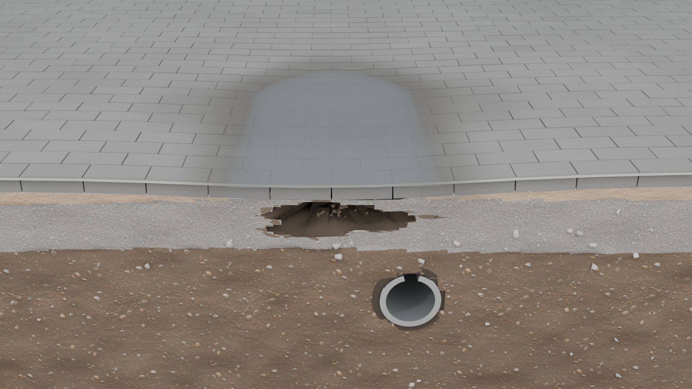
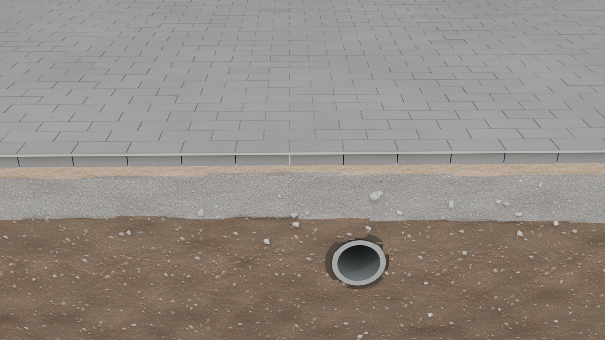

보도블럭 단면 정지 컷
같은 구도의 두 상태를 비교합니다. 영상으로 만들기 전에 크기감과 재료, 빈 공간의 깊이를 먼저 확인합니다.설명용 CGI 정지 컷 · 실제 현장 아님
침하·물 고임 상태
큰 이미지 보기

하부의 빈 공간과 그 위 포장의 침하를 비교하는 예시입니다. 이 그림으로 관로 손상 여부나 재료가 유실된 경로를 판정할 수는 없습니다.
실측 단면·하중 해석이 아닙니다.실제 원인은 현장 점검으로 확인합니다.
하부가 지지하는 상태
큰 이미지 보기

같은 장소를 가정한 비교 장면입니다. 포장과 하부의 관계를 보기 위한 것으로, 이 그림만으로 적정 설계나 정상 여부를 판정할 수는 없습니다.
치수·층 구성은 설명을 위한 예시이며특정 현장의 시공 기준이 아닙니다.
그림을 볼 때
함께 알아둘 점
- 스밈과 결함은 다릅니다
- 줄눈으로 물이 스며든다는 사실만으로 결함을 뜻하지는 않습니다. 물의 양과 배출 경로, 흙이 함께 유실되는지 등을 확인해야 합니다.
- 고임의 원인은 여럿입니다
- 내려앉음 외에도 표면 기울기나 배수구 막힘 등으로 물이 고일 수 있습니다. 이 단면이 모든 고임의 원인을 설명하지는 않습니다.
- 보수 범위도 달라집니다
- 하부와 배수가 양호하면 표면 정비를 검토하고, 빈 공간·지지력 저하나 관로 손상이 확인되면 하부·관로 복구를 함께 검토합니다.